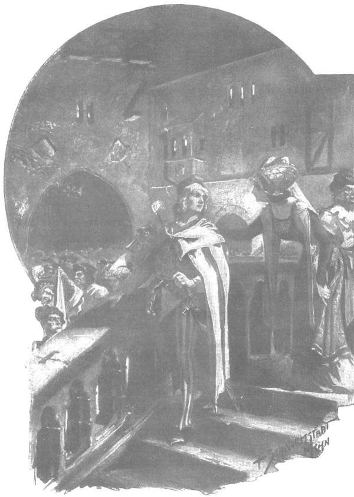

Zbyszko ôm lấy chân quận chúa xứ Plock và xin được phụng sự bà, nhưng thoạt tiên bà không nhận ra chàng, vì đã lâu không gặp. Mãi đến khi nghe chàng xưng tên, bà mới thốt lên:
- Phải rồi! Hiệp sĩ Zbyszko trang Bogdaniec! Thế mà ta lại cứ ngỡ là ai đó từ hoàng cung. Hay quá! Chú của anh, lão hiệp sĩ Bogdaniec, đã từng là khách của chúng ta ở đây, và ta còn nhớ ông ấy đã khiến ta và gia nhân phải rơi lệ khi kể chuyện về anh. Thế anh đã tìm thấy hôn thê chưa? Bây giờ cô ấy ở đâu?
- Nàng mất rồi, thưa quận chúa…
- Ôi, Chúa ơi! Đừng nói nữa, kẻo ta khóc mất. Chỉ còn một điều an ủi, là cô ấy còn trẻ thế mà đã được đón lên thiên giới. Lạy Đức Chúa hùng mạnh! Phụ nữ là những sinh linh vô cùng yếu ớt. Nhưng ở thiên đường cô ấy sẽ được ban thưởng vì tất thảy. Vậy lão hiệp sĩ trang Bogdaniec có ở đây cùng anh không?
- Thưa không, chú ấy đang bị bọn Thánh chiến giam giữ, tôi đang tìm cách chuộc chú ấy ra.
- Thật rủi cho ông ấy. Quả là người nhanh trí, hiểu tường tận mọi phong tục. Bao giờ chuộc được ông ấy ra, hãy đến thăm ta nhé. Ta sẽ rất vui được đón tiếp, vì nói thật lòng, hiếm người hiểu biết như ông ấy và điển trai như anh.
- Vâng, xin tuân lời quận chúa nhân từ đã dạy, tôi cũng đến đây cầu xin quận chúa ban một lời thỉnh cầu cho chú ấy.
- Được rồi. Hãy đến vào sáng mai trước khi đi săn, ta sẽ có thời gian.
Lời bà bị ngắt quãng bởi tiếng kèn rền vang, báo hiệu sự xuất hiện của quận công Janusz Mazowiecki và quận chúa vợ ông. Vì Zbyszko và quận chúa xứ Plock đứng bên cạnh cửa ra vào, nên quận chúa Anna Danuta thấy ngay, bà liền bước đến bên chàng, không để ý đến viên tổng trấn đang cung kính cúi chào bà.
Thấy quận chúa, trái tim chàng trai trẻ lại thêm một lần bị đau nhói, chàng liền quỳ xuống, ôm đầu gối bà, và cứ quỳ mãi trong câm lặng, còn bà cúi xuống bên chàng, dùng đôi bàn tay ghì chặt thái dương chàng, những giọt lệ thi nhau lăn xuống mái tóc sáng màu của chàng, như bà mẹ đang khóc cho sự bất hạnh của chính con trai mình.
Rồi trước sự ngạc nhiên của đám cận thần và các vị quan khách, bà bật khóc suốt hồi lâu, miệng nức nở lặp đi lặp lại:
- Ôi Chúa Giêsu, ôi Chúa Giêsu lồng lành.
Rồi bà đỡ Zbyszko đứng dậy và nói:
- Ta khóc cho con, Danusia của ta, và ta khóc cho cả anh nữa. Nhưng Thiên Chúa phán quyết mọi điều, mọi nỗi khổ đau của anh và những giọt lệ của ta giờ đây cũng chẳng giúp được gì. Nhưng anh phải kể hết ta nghe mọi chuyện về cái chết của con bé, dẫu có phải nghe suốt cả đêm ta cũng chẳng thấy đủ.
Và bà dắt chàng sang một bên, chỗ hồi nãy hiệp sĩ xứ Taczew đã đưa chàng tới. Những ai trong số khách mời chưa quen biết Zbyszko liền hỏi nhau về những cuộc phiêu lưu của chàng, và thế là trong suốt hồi lâu, đám đông chỉ bàn tán về chàng, về Danusia và ông Jurand. Các đặc sứ của Giáo đoàn Thánh chiến được cử đến để bệ kiến đức vua hôm đó là Frydrych von Wenden, lãnh binh thành Toruń, và Jan von Schồníeld, lãnh binh thành Osteroda, cũng tò mò dò hỏi. Jan von Schõníeld là người Đức, nhưng vốn gốc gác vùng Śląsk, nói thành thạo tiếng Ba Lan, liền hỏi xem sự thể thế nào, và sau khi được nghe chuyện kể qua miệng hiệp sĩ Jasiek xứ Zabierz, đình thần của quận công Janusz, y liền nói:
- Danveld và de Lӧwe đang bị đại thống lĩnh nghi ngờ sử dụng ma thuật.
Nói đoạn, dường như sực nghĩ rằng những điều vừa thốt ra có thể hắt bóng đen lên cả Giáo đoàn, như đã từng xảy ra đối với Giáo đoàn Đền thánh [225] hồi nào, nên y vội nói thêm:
- Đó là lời những gã hát rong, nhưng mà không phải, họ có ở chỗ chúng tôi đâu mà biết.
Hiệp sĩ xứ Taczew đứng bên liền bật ra:
- Kẻ nào dám ngăn lễ rửa tội của Litva, kẻ đó cũng coi thường cả thánh giá.
- Chúng tôi luôn mang thánh giá trên áo. - Schõníeld kiêu hãnh đáp lại.
Hiệp sĩ Powała nói:
- Lẽ ra phải mang nó trong tim.
Đúng lúc ấy, tiếng kèn lại rền vang hơn nữa báo hiệu đức vua đến, cùng với tổng giám mục Gniezno, giám mục thành Kraków, giám mục thành Plock, viên trấn thành Kraków và một số chức sắc, triều thần khác, trong đó có hiệp sĩ Zyndram xứ Maszkowice mang gia huy Thái Dương và quận công trẻ tuổi Jamont, người hộ giá cho đức vua. Dung mạo đức vua ít thay đổi kể từ khi Zbyszko được gặp ngài dạo trước. Vẫn đôi má đỏ rực như hồi nào, vẫn mái tóc dài mà chốc chốc ngài lại gạt ra sau tai, và ánh mắt tinh anh nhưng đầy lo lắng. Zbyszko có cảm giác đức vua nghiêm trang và uy nghi hơn, như thể ngài vững tin hơn trên ngai vàng, vị trí mà sau khi hoàng hậu bảng hà thoạt tiên ngài đã muốn rời bỏ ngay, không muốn tại vị nữa, dường như giờ đây đức vua đã ý thức được sức mạnh và quyền nàng vô cùng to lớn của mình. Hai vị quận công Mazowsze đứng kề sát hai bên đấng quân vương, trước mặt ngài là các đặc sứ của Đức đang cung kính cúi chào, quây quần chung quanh ngài là các chức sắc và đình thần cao cấp nhất.
Bức tường bao quanh sân rung lên bởi những tiếng hò reo không ngớt, tiếng kèn và tiếng trống ầm ầm.
Khi những thanh âm lặng đi, vị đặc sứ Thánh chiến von Wenden lên tiếng nói gì đó về các khó khăn của Giáo đoàn, nhưng vừa nghe mấy lời, đức vua đã hiểu ngay những gì y định hướng đến, nên sốt ruột phẩy tay và cất giọng trầm hùng:
- Ngươi thôi đi! Chúng ta đến đây để vui chơi, để ăn và uống, chứ không muốn phải xem những tư liệu của ngươi đâu.
Dứt lời, đức vua lại mỉm cười thân thiện, không muốn gã Thánh chiến nghĩ rằng ngài đã quá gay gắt, rồi nói thêm:
- Còn về các khó khăn, ta sẽ bàn với đại thống lĩnh tại Raciążek.
Rồi ngài hỏi quận công Ziemowit:
- Mai ta vào rừng đi săn chứ, hả?
Câu hỏi như một lời tuyên cáo rằng tối nay đức vua không muốn nói bất cứ chuyện gì khác ngoài những cuộc đi săn mà ngài vô cùng yêu thích, ngài thường lui tới vùng Mazowsze để đi săn, bởi vì Małopolska và Wielkopolska có ít rừng, và một số vùng đất đông dân cư đến nỗi rừng hoàn toàn biến mất.
Mọi người đều vui mừng, bởi họ biết rằng mỗi khi nói về săn bắn, đức vua thường vui vẻ và rộng lượng. Quận công Ziemowit liền bàn sẽ đi đâu, săn thú gì, còn quận công Janusz liền phái một cận thần vào thành để dẫn đến bệ kiến đức vua hai lực sĩ, những kẻ đã từng ghì sừng bò tót để lôi chúng về và cũng đã từng nện gãy xương gấu.
Zbyszko rất muốn bệ kiến đức vua, nhưng không thể đến gần ngài. Chỉ có quận công Jamont gật đầu thân thiện với chàng từ xa, dường như đã quên đi câu trả lời sắc bén mà chàng hiệp sĩ trẻ từng đáp trả ở Kraków, và ra hiệu cho chàng đến gần khi có thể. Nhưng đúng lúc đó, tay ai đó khẽ chạm vào tay chàng hiệp sĩ, rồi một giọng nói ngọt ngào và buồn bã cất lên sát bên tai chàng:
- Anh Zbyszko…

Chàng trai quay lại và thấy Jagienka ngay trước mặt
Chàng trai quay lại và thấy Jagienka ngay trước mặt. Trước đó mải chào hỏi quận chúa Ziemowitowa, rồi lại trò chuyện với quận chúa Januszowa, chàng không thể đến gần cô gái, nhưng chính nàng, nhân sự lộn xộn khi đức vua xuất hiện, đã nhích đến với chàng.
- Anh Zbyszko, - nàng lặp lại, - xin Chúa và Đức Mẹ Tối Linh an ủi anh.
- Cầu Chúa đáp đền. - Chàng hiệp sĩ nói.
Lòng đầy biết ơn, chàng nhìn vào đôi mắt xanh thảm của cô, dường như đang có làn sương mờ bao phủ. Rồi họ đứng lặng trước mặt nhau, vì dẫu cô đến với chàng như đứa em gái tốt bụng đang u buồn, nhưng với vị thế đường bệ và những xiêm áo triều y lộng lẫy, chàng thấy cô khác hẳn Jagienka ngày xưa, nên thoạt đầu chàng không dám xưng hô với cô như với cô gái hồi ở Zgorzelice hay Bogdaniec. Còn cô, sau những lời vừa thốt ra, cũng không biết nói thêm điều gì với chàng nữa.
Vẻ mặt cả hai đầy bối rối. Nhưng cũng vừa lúc ấy, tiếng ồn ào rộ lên, bởi đức vua vừa an tọa để vào tiệc. Quận chúa Januszowa bước đến gần Zbyszko và nói:
- Đây sẽ là bữa tiệc buồn với chúng ta, nhưng anh hãy cố phục dịch ta như hồi trước nhé.
Vì vậy, chàng hiệp sĩ trẻ phải rời Jagienka và khi khách khứa đã an tọa, chàng đứng ở phía sau ghế quận chúa để thay dĩa bát, rót nước và rượu cho bà. Vừa phục vụ, đôi khi bất giác chàng vẫn đưa mắt nhìn Jagienka, là thị tỳ của quận chúa thành Plock, cô đang ngồi ngay bên cạnh bà, và chàng bỗng dưng thấy ngưỡng mộ vẻ đẹp của cô. Jagienka đã trưởng thành biết bao trong mấy năm qua, thay đổi không chỉ về chiều cao, mà cả về vẻ trang nhã - điều mà ngày trước không hề có ở cô. Trước đây, mặc chiếc áo khoác da cừu với mái tóc rối bù còn vương những chiếc lá, rong ruổi trên lưng ngựa khắp rừng rậm rừng thưa, có thể ngỡ như cô là một câu bé xinh đẹp, còn giờ đây, chỉ cần thoáng nhìn cũng có thể nhận ra cô là hậu duệ một gia tộc lớn với huyết thống hùng mạnh, bởi vẻ khoan thai đĩnh đạc hiển hiện trên nét mặt Zbyszko cũng nhận thấy rằng vẻ vui tươi nhí nhảnh xưa kia của cô đã biến mất, và chàng cũng không mấy ngạc nhiên vì đã biết tin về cái chết của ông Zych. Điều khiến chàng ngạc nhiên là phong thái cao sang ở cô, mà thoạt tiên chàng cứ ngỡ là do bộ trang phục mang lại cho dáng vẻ bên ngoài của cô. Vì vậy, chàng ngắm từ dải băng vàng bao quanh vầng trán trắng như tuyết và mái tóc sẫm màu chảy dài thành hai bím trên lưng, đến chiếc áo choàng màu xanh viền nhưng dải màu tím, bó sát cơ thể, tôn bật vóc dáng thanh cao và khuôn ngực trinh nữ, mà lòng chàng thầm nhủ: “Quả là một nàng công chúa!” Sau đó chàng nhận ra rằng không chỉ phục trang là nguyên nhân sự thay đổi, giả sử bây giờ cô có mặc chiếc áo da cừu giản dị khi xưa, chàng cũng không dám đối xử suồng sã như hồi trước.
Rồi chàng để ý thấy nhiều hiệp sĩ trẻ trung, thậm chí cả những hiệp sĩ lớn tuổi cũng đang chăm chú và thèm thuồng ngắm nhìn cô. Một lần, khi thay chiếc đĩa mới cho quận chúa, bắt gặp vẻ mặt chăm chú đến ngây ra của hiệp sĩ de Lorche đang ngắm cô gái, bất chợt lòng chàng cảm thấy tức sôi lên. Hành xử của hiệp sĩ xứ Geldria cũng không thoát khỏi sự chú ý của quận chúa Januszowa, và khi chợt nhận thấy thế, bà liền nói:
- Nhìn de Lorche kìa! Chắc lại phải lòng người ta rồi, ngây cả người ra.
Rồi hơi nghiêng người qua bàn và đưa mắt sang Jagienka ngồi bên, bà nói:
- Hẳn là những ngọn nến khác bị mờ đi khi ở cạnh bó đuốc này.
Zbyszko bị Jagienka thu hút, vì dường như đối với chàng, cô gái là một người một thịt thân ái mà chàng yêu thương, cảm thấy không ai đồng cảm với nỗi buồn của mình hơn cô, không trái tim ai khác có tình thương lớn lao hơn, nhưng đêm nay chàng không thể nói được gì thêm với cô, vì chàng còn bận phục dịch, hơn nữa các ca công và dàn kèn chơi nhạc ồn ào trong suốt bữa tiệc, đến nỗi ngay cả những người ngồi cạnh nhau cũng không thể nghe rõ lời nhau. Hai quận chúa và các thị nữ tùy tùng lại rời bàn tiệc sớm, trước cả đức vua, các quận công và giới hiệp sĩ, những người quen chạm cốc đến tận khuya. Jagienka, người mang đệm ngồi cho quận chúa, không thể ở lại thêm, nên đành đi theo bà, đến lối ra cô chỉ kịp mỉm cười lần nữa với Zbyszko và gật đầu chào chàng. Mãi gần sáng, chàng hiệp sĩ trẻ, de Lorche và hai giám mã của họ mới trở về nhà trọ. Họ đi trong im lặng hồi lâu, nhưng khi về gần tới nhà, de Lorche nói gì đó với hộ vệ của chàng ta, một người quê vùng Pomeran, thạo tiếng Ba Lan, rồi người này quay sang Zbyszko, nói:
- Chủ của tôi xin được hỏi tôn ông một điều.
- Được thôi. - Zbyszko nói.
Hai người kia lại nói chuyện với nhau một hồi, rồi hộ vệ người Pomeran khẽ mỉm cười dưới bộ ria mép và nói:
- Chủ tôi muốn hỏi: nàng thiếu nữ mà tôn ông đã trò chuyện trước bữa tiệc là phàm nhân, thiên thần hay một vị thánh?
- Bảo với chủ của ngươi, - Zbyszko trả lời với vẻ sốt ruột, - rằng hắn đã hỏi ta câu ấy từ ngày xưa rồi, ta quá chán khi phải nghe lại! Chứ gì nữa: ở Spychow, chủ ngươi nói nhất định sẽ đến triều đình đại quận công Witold vì người đẹp xứ Litvvinek, rồi sau hắn lại muốn đến Plock cũng với lý do ấy, ở Plock hôm nay hắn muốn thách đấu hiệp sĩ xứ Taczew vì cô nàng Agnieszka xứ Dlugolas, và bây giờ hắn lại nhắm tới một cô gái khác. Chẳng lẽ sự kiên định và đức tin hiệp sĩ của hắn là vậy sao?
Nghe câu trả lời từ miệng giám mã của mình, de Lorche nặng nhọc thở dài, ngước mắt hồi lâu nhìn lên bầu trời đêm đang rạng dần, rồi đáp lại những lời chỉ trích của Zbyszko:
- Anh nói đúng. Không kiên định, thiếu niềm tin! Tôi chỉ là một kẻ tội lỗi, không xứng được đeo cựa hiệp sĩ. Còn về cô Agnieszka xứ Dlugolas - dũng, tôi đã thề với nàng và Chúa đã giúp tôi giữ lời, nhưng người anh em sẽ thương xót nếu nghe tôi kể cô nàng đã chơi khăm tôi ác thế nào tại lâu đài xứ Czersk.
Nói đoạn, chàng lại thở dài, ngước mắt nhìn trời, nơi phương đông ngày càng rạng sáng, và đợi gã Pomeran dịch xong, lại tiếp:
- Nàng nói với tôi rằng kẻ thù của nàng là gã phù thủy nương náu trong một tòa tháp giữa rừng sâu, mỗi năm gã phái một con rồng đến để hại nàng, cứ đến tiết xuân nó tới rình bên tường thành xứ Czersk chờ cơ hội để bắt nàng. Nghe nàng nói thế, tôi liền tuyên bố sẽ đánh nhau với rồng. Ôi chao ơi! Xin hãy nghe tôi kể! Đến nơi nàng chỉ, tôi thấy con quái vật khủng khiếp đang bất động rình chờ, niềm vui tràn ngập hồn tôi khi nghĩ rằng hoặc gục ngã, hoặc sẽ cứu nàng trinh nữ thoát khỏi bộ răng nanh ghê tởm kia, và danh tiếng tôi sẽ thành bất tử. Nhưng khi đến gần, thọc giáo vào con quái vật, tôi đã thấy gì, anh biết không? Chỉ là một đống rơm lớn phủ trên các thanh gỗ, còn cái duôi thì làm bằng đây chão! Thay vì nổi tiếng, tôi đã bị cười giễu, đến nỗi phải thách đấu với hai hiệp sĩ vùng Mazowsze, và bị họ nện cho nhừ tử. Cô nàng tôi tôn thờ nhất đời, người duy nhất mà tôi muốn yêu, đã đối xử với tôi thế đấy…
Dịch những lời ấy, đôi lúc gã hộ vệ xứ Pomeran suýt cắn phải lưỡi, cố lắm để không bật cười, mà khi khác chắc Zbyszko cũng đã cười phá lên, nhưng lúc này nỗi đau khổ đã xua tan mất niềm vui, nên chàng nghiêm túc đáp lại:
- Có lẽ cô ấy làm thế cũng chỉ vì nhẹ dạ, chứ không có ý gì xấu.
- Tôi cũng đã bỏ qua, - de Lorche nói, - bằng chứng mà anh vừa chứng kiến là tôi đã thách với hiệp sĩ xứ Taczew để bảo vệ nhan sắc và đức hạnh của nàng.
- Chớ dại làm điều đó - Zbyszko nói nghiêm trang hơn.
- Tôi biết là chết, nhưng tôi thà gục, hơn phải chịu buồn khổ triền miên…
- Hiệp sĩ Powała chẳng để ý chuyện ấy đâu. Tốt nhất, mai hãy đi với tôi đến gặp và kết bạn với ông ấy.
- Tôi sẽ đi, ông ấy đã khiến tôi xúc động, nhưng mai ông ấy lại đi săn với đức vua mất rồi.
- Ta sẽ đi vào buổi sáng. Đức vua mê đi săn, nhưng việc nghỉ ngơi người cũng chẳng xem thường, mà hôm nay đức vua đã tiệc tùng đến tận khuya cơ mà.
Họ đã làm thế, nhưng vô ích, vì chàng trai Séc - người đã tới lâu đài trước họ để gặp Jagienka, báo rằng hiệp sĩ Powała không ngủ ở nhà, mà ngủ lại trong khách điếm của hoàng gia. Tuy nhiên, họ cũng không phải thất vọng vì quận công Janusz đã gặp và bảo họ đi theo đoàn tùy tùng của ông, nghĩa là họ được tham gia cuộc săn. Trên đường vào rừng, Zbyszko cũng tìm được cơ hội nói chuyện với quận công Jamont, người đã báo với chàng một tin tốt lành.
- Khi giúp đức vua thay quần áo đi nằm, - anh ta bảo, - tôi có nhắc người về anh và chuyện phiêu lưu ở Kraków của anh. Vì lúc ấy cũng có mặt cả hiệp sĩ Powała, ngài liền mách đức vua rằng chú của anh đang bị các quân Thánh chiến bắt giữ, xin đức vua hãy nói với bọn chúng chuyện chú anh. Đang rất căm tức chúng vì vụ bắt cóc bé Jaśko từ Kretkowo và giận dữ vì nhiều vụ bắt bớ khác, đức vua càng điên tiết hơn. “Không phải nói với chúng bằng lời ngọt ngào,” đức vua bảo, “mà phải nói bằng giáo! Bằng giáo! Bằng một ngọn giáo!” Còn hiệp sĩ Powała lại cố ý đổ thêm dầu vào lửa. Đến sáng, các đặc sứ Thánh chiến đã chờ sẵn ở cổng thành, nhưng đức vua không thèm đưa mắt nhìn chúng, dù chúng đã cúi rạp mình xuống sát đất. Giờ thì chắc chắn chúng sẽ không nhận được lời hứa của đức vua là sẽ không giúp đại quận công Witold, chúng sẽ không biết phải làm thế nào. Nhưng anh cứ tín chắc rằng đức vua sẽ không quên ép đại thống lĩnh về chuyện ông chú của anh đâu.
Tâm hồn chàng trai đã được an ủi bởi quận công Jamont, sau đó chàng còn được an ủi nhiều hơn nữa nhờ Jagienka, bởi trong khi tháp tùng quận chúa Ziemowitowa đi săn, cô đã tìm cách đi gần Zbyszko. Khi đi săn người ta thường rất tự do, họ hay đi theo từng cặp, các cặp không đi quá gần nhau, vì vậy có thể trò chuyện thoải mái. Jagienka đã được chàng trai Séc cho biết việc ông Maćko bị bắt và cô đã không để phí thời gian. Theo lời cầu xin của cô, quận chúa đã gửi một lá thư cho đại thống lĩnh, hơn thế nữa, bà còn yêu cầu lãnh binh thành Toruń là von Wenden phải đề cập đến chuyện đó trong bức thư giải trình những gì đang xảy ra ở Plock. Y khoe với quận chúa rằng y đã viết: “Nếu muốn khiến đức vua hài lòng, đại thống lĩnh không nên làm khó chuyện này.” Mà lúc này đại thống lĩnh đang muốn lấy lòng vị quân vương hùng mạnh nhất, và để được an toàn tuyệt đối, ông muốn hướng mọi thế lực nhằm chống lại Witold, người mà cho đến nay Giáo đoàn không thể làm gì được.
- Vâng, em đã cố hết sức xin bà đừng trì hoãn, - Jagienka nói tiếp, - còn đức vua, vốn không nhường em gái trong những chuyện dại sự, chắc sẽ cố gắng chiều lòng bà trong những việc nhỏ, nên em rất hy vọng.
- Nếu chúng không hay phản trắc đến thế, - Zbyszko nói, - tôi sẽ trả ngay tiền chuộc cho xong, nhưng bọn chúng có thể làm mọi chuyện, như cụ Tolima đã cảnh báo, chúng sẽ lấy cả tiền lẫn những cống vật ta mang nộp, nhưng vẫn không chịu thả người, nếu ta không có thế lực đủ mạnh hậu thuẫn.
- Em hiểu. - Jagienka nói.
- Tiểu thư đã hiểu mọi điều, - Zbyszko nói, - tôi mang ơn tiểu thư suốt đời.
Còn cô, ngước đôi mắt u buồn và nhân hậu nhìn chàng, rồi hỏi:
- Sao anh không xưng hô với em như trước, mình quen nhau từ nhỏ kia mà.
- Tôi không biết - Chàng trả lời thành thật - Có gì đó khó quá… Tiểu thư cũng đâu có còn là cô bé ngày xưa, mà như thể là… một người hoàn toàn…
Chàng không sao tìm được lời thích hợp, nhưng cô gái đã cắt lời và nói:
- Vì chuyện xảy ra hồi trước… Bọn Đức đã giết cha em ở Śląsk.
- Đúng! - Zbyszko nói. - Cầu Chúa ban cho ông ánh sáng thiên giới vĩnh hằng.
Họ lặng lẽ đi bên nhau, như thể đang im lặng lắng nghe tiếng rì rào trầm mặc của rừng thông, rồi cô lại hỏi:
- Sau khi chuộc được chú Maćko, anh sẽ ở lại đó chứ?
Zbyszko nhìn cô vẻ ngạc nhiên, bởi vì quá buồn, cho đến nay chàng chưa hề nghĩ đến chuyện tiếp theo. Chàng ngước mắt lên như thể đang suy nghĩ, lâu sau mới trả lời:
- Tôi cũng chưa biết nữa! Lạy Chúa Ki-tô nhân từ! Làm sao biết được? Chỉ biết rằng có đi đến đâu thì nỗi bất hạnh cũng sẽ theo tôi. Hey! Bất hạnh nặng nề!… Tôi sẽ chuộc chú tôi, rồi sau đó có lẽ sẽ đến với đại quận công Witold, để thực hiện lời thề chống lũ Thánh chiến - và chắc tôi sẽ chết.
Đôi mắt của cô gái chợt mờ đi, và hơi nghiêng người về phía chàng trai, cô thốt lên rất khẽ, như thể khẩn cầu:
- Anh đừng chết, đừng chết!
Và một lần nữa họ lại im lặng, mãi đến khi về gần tới tường thành, Zbyszko mới thoát khỏi nỗi ưu tư đang dằn vặt mà hỏi:
- Thế còn tiểu thư… thế còn em - em sẽ ở lại cung đình ư?
- Không ạ. - Cô đáp. - Em buồn nhớ các em trai và Zgorzelice. Bọn Cztan và Wilk chắc cũng đã kết hôn rồi, mà nếu chưa thì em cũng chẳng sợ họ nữa.
- Cầu Chúa ban cho, chú Maćko sẽ đưa em về Zgorzelice. Chú ấy là người thân thiết với em, mọi sự em có thể trông cậy ở chú. Em vẫn nhớ chú chứ…
- Thề với anh rằng với bác ấy, em sẽ giống như con gái ruột..
Nói dứt lời, cô òa khóc nức nở vì lòng chợt buồn thương vô hạn.
*
Hôm sau, hiệp sĩ Powała xứ Taczew đến nhà trọ của Zbyszko và bảo chàng:
- Sau lẽ Mình Thánh Chúa Ki-tô, đức vua sẽ đến RaciạẺek gặp đại thống lĩnh, và anh được đưa vào đoàn các hiệp sĩ hoàng gia, hãy lên đường ngay cùng chúng tôi.
Zbyszko sướng đến phát điên khi nghe những lời này, bởi việc được nhập vào đoàn hiệp sĩ hoàng gia không chỉ bảo đảm cho chàng tránh khỏi những trò bội phản hèn hạ của bọn Thánh chiến, mà còn là một vinh dự vô cùng lớn lao. Trong đoàn có hiệp sĩ Zawisza Czarny cùng hai người em ruột của ông là Farurej và Kruczek, hiệp sĩ Powała, các hiệp sĩ Krzon xứ Kozieglowy, Stach xứ Charbimowice, Paszko Zlodziej xứ Biskupice, Lis xứ Targowisko - và nhiều trang hiệp sĩ oai hùng khác, lừng danh cả trong ngoài nước. Đức vua Jagietìo chỉ mang theo một đoàn tùy tùng nhỏ, bởi vì một số hiệp sĩ vân ở nhà, một số khác đang phiêu lưu ở ngoại quốc trên những vùng đất xa xôi, nhưng đức vua biết rằng với đoàn tùy tùng này, có thể đến tận thành Malborg mà không sợ bọn Thánh chiến giở trò, vì nếu có chuyện gì thì những cánh tay mạnh mẽ của họ sẽ phá tung tòa thành và sẽ mở đường cho ngài xuyên qua phòng tuyến của bọn Đức. Trái tim trai trẻ của Zbyszko cháy bỏng niềm tự hào khi nghĩ sẽ được đồng hành cùng những người như vậy.
Vì vậy, quên cả nỗi đau buồn, Zbyszko nắm chặt tay hiệp sĩ Powała xứ Taczew, vui sướng kêu lên:
- Đội ơn ngài, không ai khác, tôi đội ơn ngài, thưa hiệp sĩ!
- Ta chỉ là một phần thôi, - Powała nói, - còn lại là nhờ quận chúa sở tại, nhưng anh phải cảm ơn nhiều nhất là đức vua nhân từ của chúng ta, người mà anh nên ngay lập tức quỳ tạ ơn, nếu không muốn bị coi là vô ơn.
- Tôi sẵn sàng chết vì người, cầu Chúa giúp sức! - Zbyszko thốt lên.